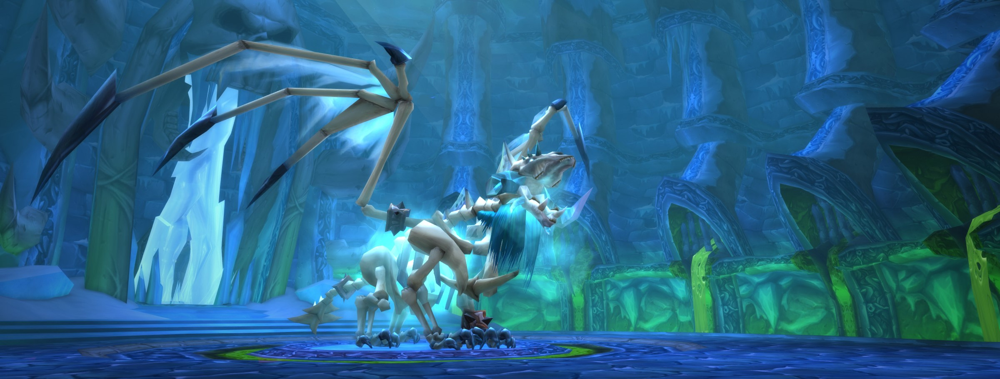

30/Nov/2020
La necrópolis conocida como Naxxramas sobrevuela las Tierras de la Peste y es el hogar de uno de los oficiales más poderosos del Rey Exánime, el temible exánime Kel’Thuzad. En el interior de la necrópolis se reúnen horrores del pasado y terrores que aún no han visto la luz del día mientras los sirvientes del Rey Exánime preparan el ataque. La Plaga avanza una vez más…
Este parche Incluye lo siguiente: